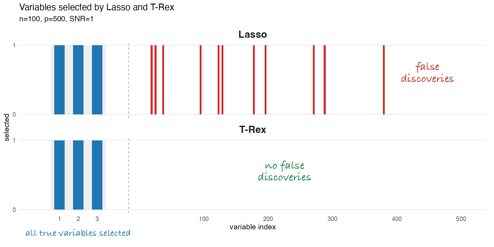
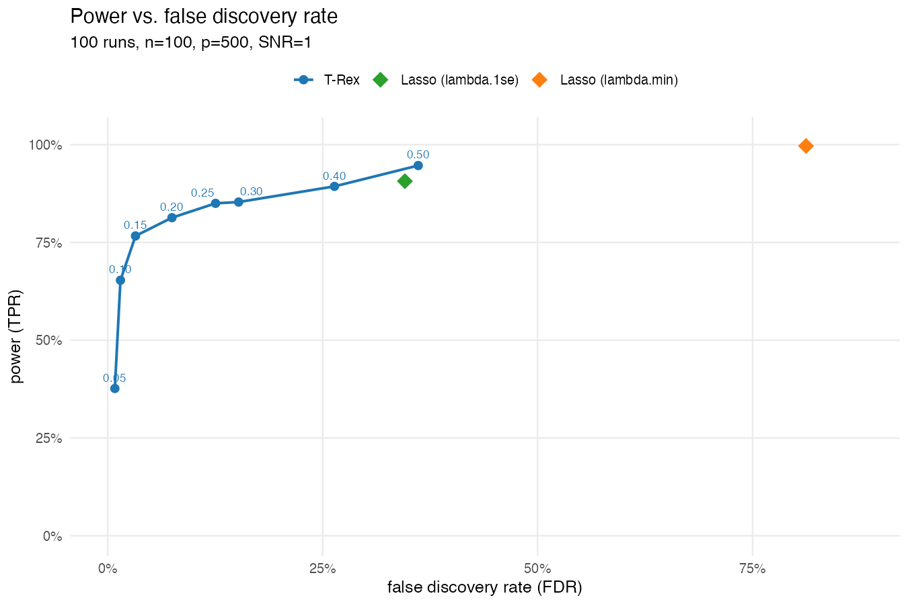

T-Rex Selector
False discoveries plague science and engineering. In genomics, a single false discovery can wrongly tie a gene to a disease, contributing to the reproducibility crisis and derailing years of research and clinical effort (Huffman et al., 2018). In finance, hundreds of studies claim to have found factors that explain stock returns, yet most of these findings are likely false (Harvey, Liu, and Zhu, 2016).
The Lasso is arguably the most widely used method for variable selection but lacks a false discovery control.
The T-Rex Selector allows the user to control the rate of false discoveries, with rigorous finite-sample statistical guarantees grounded in martingale theory (Machkour, Muma, and Palomar, 2025).
This example illustrates how the Lasso produces false discoveries whereas T-Rex controls them:

T-Rex provides the full trade-off of power vs false discovery rate:

The T-Rex Selector has been actively developed since 2019 by a diverse research team.


Core Publications
- Jasin Machkour, Michael Muma, and Daniel P. Palomar, “The Terminating-Random Experiments Selector: Fast High-Dimensional Variable Selection with False Discovery Rate Control,” Signal Processing, vol. 231, pp. 109894, 2025.
- Jasin Machkour, Michael Muma, and Daniel P. Palomar, “High-Dimensional False Discovery Rate Control for Dependent Variables,” Signal Processing, vol. 234, pp. 109990, 2025.
- Taulant Koka, Jasin Machkour, Daniel P. Palomar, and Michael Muma, “Virtual Dummies: Enabling Scalable FDR-Controlled Variable Selection via Sequential Sampling of Null Features,” arXiv:2604.07464, 2026.